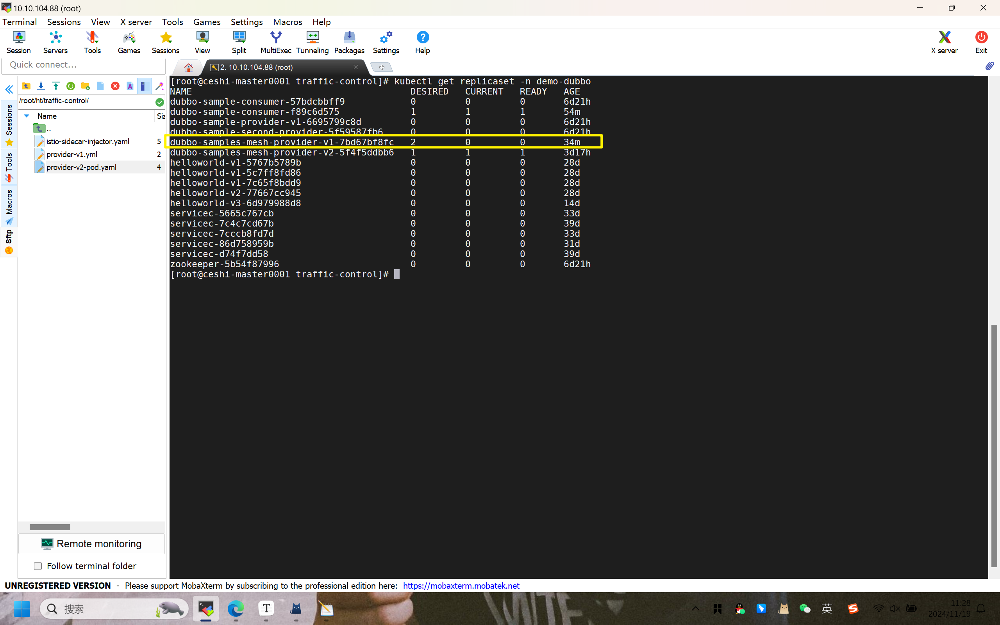

此内容根据文章生成，仅用于文章内容的解释与总结
投诉 环境准备 部署官网：地址同步 | Apache Dubbo 。
官网部署下来绝对是有问题的，因为缺少了部分配置，只能说提供了参考。这篇文档中在官方部署的基础上增加配置文件需要的配置以及注意事项等，并且附上解决方向和思路。
k8s集群中的环境准备：
k8s中已经安装了istio，并且istio-system下的pod都处于running状态
有provider-v1、v2，consumer镜像（私有仓库等）
1 2 3 4 5 istioctl version kubectl get pods -n istio-system
查看webhook注入服务网格的条件 1）使用kubectl get mutatingwebhookconfiguration istio-injection-1-19-6 -o yaml > istio-injection-1-19-6.yaml 命令输出yaml文件，命名空间下自动注入sidecar的表达式如图，条件为：命名空间的标签应该有istio.io/rev=1-19-6，同时不能存在键为istio-injection的标签
2）查看需要自动注入的命名空间的标签是否满足匹配条件，不满足需要增删命名空间的标签
1 2 3 4 5 6 7 kubectl label -n demo-dubbo istio-injection- kubectl label -n demo-dubbo istion-injection=enabled
部署provider-v1 部署provider-v1：service和deployment 1 2 3 4 5 kubectl apply -f https://raw.githubusercontent.com/apache/dubbo-samples/master/3-extensions/registry/dubbo-samples-mesh-k8s/deploy/provider/Service.yml kubectl apply -f https://raw.githubusercontent.com/apache/dubbo-samples/master/3-extensions/registry/dubbo-samples-mesh-k8s/deploy/provider/Deployment.yml
查看pod是否存在代理，如果在container中存在istio-proxy的容器，则说明部署成功，下面的内容直接跳过，部署consumer；否则找下下面有没有解决方案
1 kubectl describe pod <pod-name> -n demo-dubbo | grep istio-proxy
注意事项 需要修改命名空间和仓库，仓库这里我换成自己的
拉取yml文件失败解决方案 打开代理（魔法），将链接复制到浏览器，复制yml文件到自己节点的操作系统中
1 2 kubectl apply -f Deployment.yml
查看是否部署成功
service：
deploy：可以看到deployment部署失败了
部署失败及解决方案 此处解决方案仅提供参考
deploy部署失败且没有pod 上一步来看，deployment的ready为0/2，查看日志，报错创建副本失败（pod也不存在说明不是镜像问题）
1 2 kubectl get replicaset -n demo-dubbo

1 2 kubectl describe replicaset dubbo-samples-mesh-provider-v1-7bd67bf8fc -n demo-dubbo
可以看到是quota的问题，需要指定这个deployment的内存占额是多少
1 2 3 4 5 6 7 resources: limits: cpu: "1" memory: 1Gi requests: cpu: 600m memory: 1000Mi
修改好后重新部署，但是我还是失败了，成功可跳过
deploy部署失败但是pod处于pending
1 2 kubectl describe pod dubbo-samples-mesh-provider-v1-6c7d48c58c-lh4n7 -n demo-dubbo
警告内容：一个节点资源不足，一个节点存在未容忍控制平面的污点，六个节点未容忍自定义的污点
接下来在yml文件中添加容忍
1 2 3 4 5 tolerations: - key: "skyview/nodepool-taint" operator: "Equal" value: "system" effect: "NoSchedule"
再次删除deployment，运行yml文件后查看结果，可以看到pod是成功创建的，k8s正在创建容器
部署成功但pod中不存在istio-proxy代理容器 grep pod的yaml文件，但是里面没有istio的代理。
解决方案：
查看pod是否存在容器，存在代表成功
部署consumer 部署consumer：service和deploy 1 2 3 4 5 kubectl apply -f https://raw.githubusercontent.com/apache/dubbo-samples/master/3-extensions/registry/dubbo-samples-mesh-k8s/deploy/consumer/Service.yml kubectl apply -f https://raw.githubusercontent.com/apache/dubbo-samples/master/3-extensions/registry/dubbo-samples-mesh-k8s/deploy/consumer/Deployment.yml
部署consumer的deployment和provider一样，需要修改命名空间，镜像仓库，添加pod所需资源，添加annotation：sidecar.istio.io/inject: “true”，添加容忍。
部署失败及其解决方案 pod报错：CrashLoopBackOff 这里的原因是由于v2镜像错误，provider-v2的镜像和v1可以相同
检查consumer与provider通信 部署完成后，检查启动日志，查看 consumer 完成对 provider 服务的消费。
1 2 3 4 5 6 7 8 # 查看 pod 列表 kubectl get pods -l app=dubbo-samples-mesh-consumer # 查看 pod 部署日志 kubectl logs your-pod-id # 查看 pod isitio-proxy 日志 kubectl logs your-pod-id -c istio-proxy
可以看到 consumer pod 日志输出如下( Triple 协议被 Envoy 代理负载均衡):
1 2 3 4 5 ==================== dubbo invoke 0 end ==================== [10/08/22 07:07:36:036 UTC] main INFO action.GreetingServiceConsumer: consumer Unary reply <-message: "hello,service mesh, response from provider-v1: 172.18.96.22:50052, client: 172.18.96.22, local: dubbo-samples-mesh-provider, remote: null, isProviderSide: true" ==================== dubbo invoke 1 end ==================== [10/08/22 07:07:42:042 UTC] main INFO action.GreetingServiceConsumer: consumer Unary reply <-message: "hello,service mesh, response from provider-v1: 172.18.96.18:50052, client: 172.18.96.18, local: dubbo-samples-mesh-provider, remote: null, isProviderSide: true"
consumer istio-proxy 日志输出如下:
1 2 3 4 [2022-07-15T05:35:14.418Z] "POST /org.apache.dubbo.samples.Greeter/greet HTTP/2" 200 - via_upstream - "-" 19 160 2 1 "-" "-" "6b8a5a03-5783-98bf-9bee-f93ea6e3d68e" "dubbo-samples-mesh-provider:50052" "172.17.0.4:50052" outbound|50052||dubbo-samples-mesh-provider.dubbo-demo.svc.cluster.local 172.17.0.7:52768 10.101.172.129:50052 172.17.0.7:38488 - default
可以看到 provider pod 日志输出如下:
1 2 3 [10/08/22 07:08:47:047 UTC] tri-protocol-50052-thread-8 INFO impl.GreeterImpl: Server test dubbo tri mesh received greet request name: "service mesh" [10/08/22 07:08:57:057 UTC] tri-protocol-50052-thread-9 INFO impl.GreeterImpl: Server test dubbo tri mesh received greet request name: "service mesh"
provider istio-proxy 日志输出如下:
1 2 3 4 5 [2022-07-15T05:25:34.061Z] "POST /org.apache.dubbo.samples.Greeter/greet HTTP/2" 200 - via_upstream - "-" 19 162 1 1 "-" "-" "201e6976-da10-96e1-8da7-ad032e58db47" "dubbo-samples-mesh-provider:50052" "172.17.0.10:50052" inbound|50052|| 127.0.0.6:47013 172.17.0.10:50052 172.17.0.7:60244 outbound_.50052_._.dubbo-samples-mesh-provider.dubbo-demo.svc.cluster.local default
部署provider-v2 使用provider-v1的yml文件部署即可，v1和v2可以使用相同的镜像
注意命名空间的资源是否足够，使用kubectl get quota -n <namespace>的命令查看
流量治理 部署VirtualService、DestinationRule 部署yml文件：包括VirtualService（下文称vs）、DestinationRule（下文称dr），这里的version标签需要对应v1和v2的yml文件中的version，这里按照v1:v2=1:4的比例，然后运行apply命令部署vs和dr。
1 kubectl apply -f vs-dr.yml
VirtualService和DestinationRule的yml文件vs-dr.yml：
1 2 3 4 5 6 7 8 9 10 11 12 13 14 15 16 17 18 19 20 21 22 23 24 25 26 27 28 29 30 31 32 33 34 35 36 37 38 39 40 41 42 43 44 45 46 47 48 49 50 51 52 53 54 55 56 57 58 59 60 --- apiVersion: networking.istio.io/v1alpha3 kind: VirtualService metadata: name: dubbo-samples-mesh-provider namespace: demo-dubbo spec: hosts: - dubbo-samples-mesh-provider.demo-dubbo.svc.cluster.local http: - route: - destination: host: dubbo-samples-mesh-provider.demo-dubbo.svc.cluster.local subset: v1 port: number: 50052 weight: 20 - destination: host: dubbo-samples-mesh-provider.demo-dubbo.svc.cluster.local subset: v2 port: number: 50052 weight: 80 --- apiVersion: networking.istio.io/v1alpha3 kind: DestinationRule metadata: name: dubbo-samples-mesh-provider namespace: demo-dubbo spec: host: dubbo-samples-mesh-provider.demo-dubbo.svc.cluster.local trafficPolicy: loadBalancer: simple: ROUND_ROBIN subsets: - name: v1 labels: version: v1 - name: v2 labels: version: v2
部署完成后查看consumer的pod日志（主要看server容器），是否存在v1和v2按照比例分，但是我这里做grep操作都没有来自v2的provider
排查原因—控制平面方向 参考官网：Istio / 使用 Istioctl 命令行工具
1）确认标签
v1和v2确认各自存在version＝1，2的标签；
v1标签：version＝1，app＝dubbo-samples-mesh-provider，v2同理；
provider的serivce的seletor有且仅有app＝dubbo-samples-mesh-provider。
2）查看集群配置
使用istioctl proxy-config clusters <consumer-pod-name> -n demo-dubbo命令后，查找输出的内容后，确认输出
1 2 3 4 5 6 7 SERVICE FQDN PORT SUBSET DIRECTION TYPE DESTINATION RULE 50052 - inbound ORIGINAL_DST BlackHoleCluster dubbo-samples-mesh-provider.demo-dubbo.svc.cluster.local 50052 - outbound EDS dubbo-samples-mesh-provider.demo-dubbo dubbo-samples-mesh-provider.demo-dubbo.svc.cluster.local 50052 v1 outbound EDS dubbo-samples-mesh-provider.demo-dubbo dubbo-samples-mesh-provider.demo-dubbo.svc.cluster.local 50052 v2 outbound EDS dubbo-samples-mesh-provider.demo-dubbo
在provider中存在路由规则定义的subset子集，此处视为没问题。
3）查看代理监听器
使用istioctl proxy-config listeners <consumer-pod-name> -n demo-dubbo 命令重定向输出文件后，通过搜索dubbo-sample-mesh-provider没有内容，或是搜索50052也没有provider的相关信息
4）代理容器是否正常
provider的pod处于2/2状态，即istio容器正常；
代理容器日志中，event不存在问题：kubectl logs <pod-name> -n <namespace> -c <server-name>
5）排查istiod日志
1 2 k get pod -n istio-system k logs -n istio-system istiod-1-19-6-59c9f94f7-jrshb | grep provider
控制平面istiod的日志中，我通过grep provider，发现确实存在v1.v2的内容，日志部分如下：
1 2 3 4 5 6 7 8 9 10 11 12 13 14 2024-11-22T02:53:05.380995Z info ads ADS: "10.244.211.0:19736" dubbo-samples-mesh-provider-v2-56c6fdb59-jtmz7.demo-dubbo-229 terminated 2024-11-22T02:53:05.752320Z info ads ADS: new connection for node:dubbo-samples-mesh-provider-v2-56c6fdb59-jtmz7.demo-dubbo-246 2024-11-22T02:53:05.755115Z info ads CDS: PUSH request for node:dubbo-samples-mesh-provider-v2-56c6fdb59-jtmz7.demo-dubbo resources:258 size:267.2kB cached:252/254 2024-11-22T02:53:05.760381Z info ads EDS: PUSH request for node:dubbo-samples-mesh-provider-v2-56c6fdb59-jtmz7.demo-dubbo resources:236 size:39.8kB empty:0 cached:236/236 2024-11-22T02:53:05.792137Z info ads LDS: PUSH request for node:dubbo-samples-mesh-provider-v2-56c6fdb59-jtmz7.demo-dubbo resources:184 size:642.3kB 2024-11-22T02:53:05.802016Z info ads NDS: PUSH request for node:dubbo-samples-mesh-provider-v2-56c6fdb59-jtmz7.demo-dubbo resources:1 size:20.3kB 2024-11-22T02:53:05.814742Z info ads RDS: PUSH request for node:dubbo-samples-mesh-provider-v2-56c6fdb59-jtmz7.demo-dubbo resources:124 size:129.0kB cached:102/124 2024-11-22T02:53:46.875959Z info ads ADS: "10.10.104.94:12614" dubbo-samples-mesh-provider-v1-646fcc7568-dhnvd.demo-dubbo-230 terminated 2024-11-22T02:53:47.341748Z info ads ADS: new connection for node:dubbo-samples-mesh-provider-v1-646fcc7568-dhnvd.demo-dubbo-247 2024-11-22T02:53:47.345289Z info ads CDS: PUSH request for node:dubbo-samples-mesh-provider-v1-646fcc7568-dhnvd.demo-dubbo resources:258 size:267.2kB cached:252/254 2024-11-22T02:53:47.350140Z info ads EDS: PUSH request for node:dubbo-samples-mesh-provider-v1-646fcc7568-dhnvd.demo-dubbo resources:236 size:39.8kB empty:0 cached:236/236 2024-11-22T02:53:47.398701Z info ads LDS: PUSH request for node:dubbo-samples-mesh-provider-v1-646fcc7568-dhnvd.demo-dubbo resources:184 size:642.3kB 2024-11-22T02:53:47.405260Z info ads NDS: PUSH request for node:dubbo-samples-mesh-provider-v1-646fcc7568-dhnvd.demo-dubbo resources:1 size:20.3kB 2024-11-22T02:53:47.415150Z info ads RDS: PUSH request for node:dubbo-samples-mesh-provider-v1-646fcc7568-dhnvd.demo-dubbo resources:124 size:129.0kB cached:98/124
排查原因—consumer-pod方向 1）进入consumer容器后测试连接
通过进入consumer容器后测试连接http://dubbo-samples-mesh-provider.demo-dubbo.svc.cluster.local:50052报错：
1 2 [root@ceshi-master0001 traffic-control]# kubectl exec -it dubbo-samples-mesh-consumer-569c6445d5-dwxr9 -n demo-dubbo -- curl http://dubbo-samples-mesh-provider.demo-dubbo.svc.cluster.local:50052 upstream connect error or disconnect/reset before headers. reset reason: remote reset
此处修改重建过pod
1 2 3 [root@ceshi-master0001 traffic-control]# kubectl exec -it dubbo-samples-mesh-consumer-569c6445d5-w2rft -n demo-dubbo -- curl http://localhost:50052 curl: (7) Failed to connect to localhost port 50052: Connection refused command terminated with exit code 7
2）查看代理容器部分输出日志
1 kubectl logs <consumer-pod-name> -n demo-dubbo -c istio-proxy | grep 50052
输出结果：
其实这里可以看到v1和v2的比例接近1:4，但是最后三行报错503，和测试连接的地方一样；
在503报错的地方存在PassthroughCluster，这是一个兜底规则，表示istio无法匹配到具体的virtualservice，查找原因为缺乏协议适配或监听器未正确配置
1 2 3 4 5 6 7 8 9 10 11 12 13 14 15 16 17 18 19 20 21 22 23 24 25 26 27 28 29 [root@ceshi-master0001 traffic-control] [2024-11-21T03:14:27.877Z] "POST /org.apache.dubbo.samples.Greeter/greet HTTP/2" 200 - via_upstream - "-" 19 194 1941 1905 "-" "-" "d27a9c6f-9e2a-9221-9784-870c3972274e" "dubbo-samples-mesh-provider.demo-dubbo.svc.cluster.local:50052" "10.244.175.230:50052" outbound|50052|v1|dubbo-samples-mesh-provider.demo-dubbo.svc.cluster.local 10.244.211.2:34142 10.99.204.141:50052 10.244.211.2:56168 - - [2024-11-21T03:14:35.082Z] "POST /org.apache.dubbo.samples.Greeter/greet HTTP/2" 200 - via_upstream - "-" 19 190 699 686 "-" "-" "7e486813-1d8c-4740-813f-07ad1ecec993" "dubbo-samples-mesh-provider.demo-dubbo.svc.cluster.local:50052" "10.244.21.26:50052" outbound|50052|v2|dubbo-samples-mesh-provider.demo-dubbo.svc.cluster.local 10.244.211.2:59370 10.99.204.141:50052 10.244.211.2:56168 - - [2024-11-21T03:14:40.797Z] "POST /org.apache.dubbo.samples.Greeter/greet HTTP/2" 200 - via_upstream - "-" 19 190 433 413 "-" "-" "d70b41e4-6181-4f98-8ce0-b91b55e89069" "dubbo-samples-mesh-provider.demo-dubbo.svc.cluster.local:50052" "10.244.21.24:50052" outbound|50052|v2|dubbo-samples-mesh-provider.demo-dubbo.svc.cluster.local 10.244.211.2:59718 10.99.204.141:50052 10.244.211.2:56168 - - [2024-11-21T03:14:46.245Z] "POST /org.apache.dubbo.samples.Greeter/greet HTTP/2" 200 - via_upstream - "-" 19 190 14 13 "-" "-" "15b404a8-976b-4f1a-9234-28ad945a6486" "dubbo-samples-mesh-provider.demo-dubbo.svc.cluster.local:50052" "10.244.21.26:50052" outbound|50052|v2|dubbo-samples-mesh-provider.demo-dubbo.svc.cluster.local 10.244.211.2:59370 10.99.204.141:50052 10.244.211.2:56168 - - [2024-11-21T03:14:51.277Z] "POST /org.apache.dubbo.samples.Greeter/greet HTTP/2" 200 - via_upstream - "-" 19 190 12 10 "-" "-" "f56ad338-685f-4b88-b7b1-f24e759e4e90" "dubbo-samples-mesh-provider.demo-dubbo.svc.cluster.local:50052" "10.244.21.24:50052" outbound|50052|v2|dubbo-samples-mesh-provider.demo-dubbo.svc.cluster.local 10.244.211.2:59718 10.99.204.141:50052 10.244.211.2:56168 - - [2024-11-21T03:14:56.304Z] "POST /org.apache.dubbo.samples.Greeter/greet HTTP/2" 200 - via_upstream - "-" 19 190 10 9 "-" "-" "c7149860-aab3-45f7-89f7-a6e36aecc32c" "dubbo-samples-mesh-provider.demo-dubbo.svc.cluster.local:50052" "10.244.21.26:50052" outbound|50052|v2|dubbo-samples-mesh-provider.demo-dubbo.svc.cluster.local 10.244.211.2:59370 10.99.204.141:50052 10.244.211.2:56168 - - [2024-11-21T03:15:01.323Z] "POST /org.apache.dubbo.samples.Greeter/greet HTTP/2" 200 - via_upstream - "-" 19 190 11 9 "-" "-" "53705cab-252f-4631-83e4-f401fb6863cd" "dubbo-samples-mesh-provider.demo-dubbo.svc.cluster.local:50052" "10.244.21.24:50052" outbound|50052|v2|dubbo-samples-mesh-provider.demo-dubbo.svc.cluster.local 10.244.211.2:59718 10.99.204.141:50052 10.244.211.2:56168 - - [2024-11-21T03:15:06.342Z] "POST /org.apache.dubbo.samples.Greeter/greet HTTP/2" 200 - via_upstream - "-" 19 190 13 12 "-" "-" "ea762a6f-bd8e-4bcd-a90c-d7182797a026" "dubbo-samples-mesh-provider.demo-dubbo.svc.cluster.local:50052" "10.244.21.26:50052" outbound|50052|v2|dubbo-samples-mesh-provider.demo-dubbo.svc.cluster.local 10.244.211.2:59370 10.99.204.141:50052 10.244.211.2:56168 - - [2024-11-21T03:15:11.367Z] "POST /org.apache.dubbo.samples.Greeter/greet HTTP/2" 200 - via_upstream - "-" 19 192 123 122 "-" "-" "28e22e14-c929-4bbf-a59e-07bd334a77ee" "dubbo-samples-mesh-provider.demo-dubbo.svc.cluster.local:50052" "10.244.190.43:50052" outbound|50052|v1|dubbo-samples-mesh-provider.demo-dubbo.svc.cluster.local 10.244.211.2:47382 10.99.204.141:50052 10.244.211.2:56168 - - [2024-11-21T03:15:16.501Z] "POST /org.apache.dubbo.samples.Greeter/greet HTTP/2" 200 - via_upstream - "-" 19 190 11 10 "-" "-" "9deed18a-b0f4-42f0-bd7a-41ce836298ee" "dubbo-samples-mesh-provider.demo-dubbo.svc.cluster.local:50052" "10.244.21.24:50052" outbound|50052|v2|dubbo-samples-mesh-provider.demo-dubbo.svc.cluster.local 10.244.211.2:59718 10.99.204.141:50052 10.244.211.2:56168 - - [2024-11-21T03:15:21.523Z] "POST /org.apache.dubbo.samples.Greeter/greet HTTP/2" 200 - via_upstream - "-" 19 190 10 8 "-" "-" "3291178a-4fd8-4675-9aff-12af9abb09aa" "dubbo-samples-mesh-provider.demo-dubbo.svc.cluster.local:50052" "10.244.21.26:50052" outbound|50052|v2|dubbo-samples-mesh-provider.demo-dubbo.svc.cluster.local 10.244.211.2:59370 10.99.204.141:50052 10.244.211.2:56168 - - [2024-11-21T03:15:26.543Z] "POST /org.apache.dubbo.samples.Greeter/greet HTTP/2" 200 - via_upstream - "-" 19 190 12 10 "-" "-" "8ee49274-c8f7-4dfe-9c5e-a197befd3649" "dubbo-samples-mesh-provider.demo-dubbo.svc.cluster.local:50052" "10.244.21.24:50052" outbound|50052|v2|dubbo-samples-mesh-provider.demo-dubbo.svc.cluster.local 10.244.211.2:59718 10.99.204.141:50052 10.244.211.2:56168 - - [2024-11-21T03:15:31.562Z] "POST /org.apache.dubbo.samples.Greeter/greet HTTP/2" 200 - via_upstream - "-" 19 190 13 12 "-" "-" "ca7521fb-6de9-4c09-8ed4-9863c7c9176a" "dubbo-samples-mesh-provider.demo-dubbo.svc.cluster.local:50052" "10.244.21.26:50052" outbound|50052|v2|dubbo-samples-mesh-provider.demo-dubbo.svc.cluster.local 10.244.211.2:59370 10.99.204.141:50052 10.244.211.2:56168 - - [2024-11-21T03:15:36.584Z] "POST /org.apache.dubbo.samples.Greeter/greet HTTP/2" 200 - via_upstream - "-" 19 190 17 13 "-" "-" "98eb8fa7-0382-4db3-85ea-6a063b469f3a" "dubbo-samples-mesh-provider.demo-dubbo.svc.cluster.local:50052" "10.244.21.24:50052" outbound|50052|v2|dubbo-samples-mesh-provider.demo-dubbo.svc.cluster.local 10.244.211.2:59718 10.99.204.141:50052 10.244.211.2:56168 - - [2024-11-21T03:15:41.611Z] "POST /org.apache.dubbo.samples.Greeter/greet HTTP/2" 200 - via_upstream - "-" 19 190 19 13 "-" "-" "1b355eb4-5c09-44bb-81d8-6aa59d07235d" "dubbo-samples-mesh-provider.demo-dubbo.svc.cluster.local:50052" "10.244.21.26:50052" outbound|50052|v2|dubbo-samples-mesh-provider.demo-dubbo.svc.cluster.local 10.244.211.2:59370 10.99.204.141:50052 10.244.211.2:56168 - - [2024-11-21T03:15:46.638Z] "POST /org.apache.dubbo.samples.Greeter/greet HTTP/2" 200 - via_upstream - "-" 19 190 25 18 "-" "-" "5476d368-2755-4535-a919-4680cbe155f8" "dubbo-samples-mesh-provider.demo-dubbo.svc.cluster.local:50052" "10.244.21.24:50052" outbound|50052|v2|dubbo-samples-mesh-provider.demo-dubbo.svc.cluster.local 10.244.211.2:59718 10.99.204.141:50052 10.244.211.2:56168 - - [2024-11-21T03:15:51.674Z] "POST /org.apache.dubbo.samples.Greeter/greet HTTP/2" 200 - via_upstream - "-" 19 190 12 11 "-" "-" "65718322-118f-4937-918a-d4b3c40c58b3" "dubbo-samples-mesh-provider.demo-dubbo.svc.cluster.local:50052" "10.244.21.26:50052" outbound|50052|v2|dubbo-samples-mesh-provider.demo-dubbo.svc.cluster.local 10.244.211.2:59370 10.99.204.141:50052 10.244.211.2:56168 - - [2024-11-21T03:15:56.698Z] "POST /org.apache.dubbo.samples.Greeter/greet HTTP/2" 200 - via_upstream - "-" 19 190 22 20 "-" "-" "21efbedb-e77c-9d26-bc06-fada660bc3bb" "dubbo-samples-mesh-provider.demo-dubbo.svc.cluster.local:50052" "10.244.21.24:50052" outbound|50052|v2|dubbo-samples-mesh-provider.demo-dubbo.svc.cluster.local 10.244.211.2:59718 10.99.204.141:50052 10.244.211.2:56168 - - [2024-11-21T03:16:01.727Z] "POST /org.apache.dubbo.samples.Greeter/greet HTTP/2" 200 - via_upstream - "-" 19 190 14 12 "-" "-" "35f4454c-0cd2-9a2a-b44d-cea01ee60000" "dubbo-samples-mesh-provider.demo-dubbo.svc.cluster.local:50052" "10.244.21.26:50052" outbound|50052|v2|dubbo-samples-mesh-provider.demo-dubbo.svc.cluster.local 10.244.211.2:59370 10.99.204.141:50052 10.244.211.2:56168 - - [2024-11-21T03:16:06.749Z] "POST /org.apache.dubbo.samples.Greeter/greet HTTP/2" 200 - via_upstream - "-" 19 190 12 7 "-" "-" "62d4da2e-cc94-4e30-a35d-f232cd723392" "dubbo-samples-mesh-provider.demo-dubbo.svc.cluster.local:50052" "10.244.21.24:50052" outbound|50052|v2|dubbo-samples-mesh-provider.demo-dubbo.svc.cluster.local 10.244.211.2:59718 10.99.204.141:50052 10.244.211.2:56168 - - [2024-11-21T03:16:06.773Z] "POST /org.apache.dubbo.samples.Greeter/greetStream HTTP/2" 200 - via_upstream - "-" 140 161 51 46 "-" "-" "5bc8b593-2420-9e58-8224-f28e508bf1ab" "dubbo-samples-mesh-provider.demo-dubbo.svc.cluster.local:50052" "10.244.21.26:50052" outbound|50052|v2|dubbo-samples-mesh-provider.demo-dubbo.svc.cluster.local 10.244.211.2:59370 10.99.204.141:50052 10.244.211.2:56168 - - [2024-11-21T03:16:06.779Z] "POST /org.apache.dubbo.samples.Greeter/greetServerStream HTTP/2" 200 - via_upstream - "-" 15 180 46 15 "-" "-" "09ab9317-07af-4252-8ea7-4a30ed85a47e" "dubbo-samples-mesh-provider.demo-dubbo.svc.cluster.local:50052" "10.244.175.230:50052" outbound|50052|v1|dubbo-samples-mesh-provider.demo-dubbo.svc.cluster.local 10.244.211.2:34142 10.99.204.141:50052 10.244.211.2:56168 - - [2024-11-21T08:50:58.521Z] "GET / HTTP/1.1" 503 - via_upstream - "-" 0 85 808 807 "-" "curl/7.74.0" "80111e24-72e7-45ae-87bf-f55facad6218" "10.244.190.21:50052" "10.244.190.21:50052" PassthroughCluster 10.244.211.2:53832 10.244.190.21:50052 10.244.211.2:53830 - allow_any [2024-11-22T02:11:00.273Z] "GET / HTTP/1.1" 503 - via_upstream - "-" 0 85 114 113 "-" "curl/7.74.0" "b8ed6850-aba9-41ed-84ab-eca59398589a" "10.244.190.21:50052" "10.244.190.21:50052" PassthroughCluster 10.244.211.2:60014 10.244.190.21:50052 10.244.211.2:60012 - allow_any [2024-11-22T03:22:37.416Z] "GET / HTTP/1.1" 503 URX via_upstream - "-" 0 85 851 850 "-" "curl/7.74.0" "3008e906-13f2-93ae-a9e5-ba1217754274" "dubbo-samples-mesh-provider.demo-dubbo.svc.cluster.local:50052" "10.244.190.21:50052" outbound|50052|v1|dubbo-samples-mesh-provider.demo-dubbo.svc.cluster.local 10.244.211.2:42876 10.99.204.141:50052 10.244.211.2:54224 - -
我这里修改vs的比例为1:1，然后我再重新部署vs，删除pod让deploy重新部署pod，得到的日志：比例也是接近五五开的
1 2 3 4 5 6 7 8 9 10 11 12 13 14 15 16 17 18 19 20 21 22 23 24 [root@ceshi-master0001 traffic-control] [2024-11-22T04:08:05.691Z] "POST /org.apache.dubbo.samples.Greeter/greet HTTP/2" 200 - via_upstream - "-" 19 192 90 7 "-" "-" "a46d110c-a8ee-4ed4-bac0-a4ed214aa891" "dubbo-samples-mesh-provider.demo-dubbo.svc.cluster.local:50052" "10.244.211.30:50052" outbound|50052|v2|dubbo-samples-mesh-provider.demo-dubbo.svc.cluster.local 10.244.211.44:57756 10.99.204.141:50052 10.244.211.44:56420 - - [2024-11-22T04:08:11.610Z] "POST /org.apache.dubbo.samples.Greeter/greet HTTP/2" 200 - via_upstream - "-" 19 190 26 22 "-" "-" "681d2f4e-99c1-4de2-9e90-bcad8674269d" "dubbo-samples-mesh-provider.demo-dubbo.svc.cluster.local:50052" "10.244.21.41:50052" outbound|50052|v2|dubbo-samples-mesh-provider.demo-dubbo.svc.cluster.local 10.244.211.44:38848 10.99.204.141:50052 10.244.211.44:56420 - - [2024-11-22T04:08:16.645Z] "POST /org.apache.dubbo.samples.Greeter/greet HTTP/2" 200 - via_upstream - "-" 19 192 10 9 "-" "-" "852d44a1-02a4-4193-910d-6b5c62986992" "dubbo-samples-mesh-provider.demo-dubbo.svc.cluster.local:50052" "10.244.211.30:50052" outbound|50052|v2|dubbo-samples-mesh-provider.demo-dubbo.svc.cluster.local 10.244.211.44:57756 10.99.204.141:50052 10.244.211.44:56420 - - [2024-11-22T04:08:21.664Z] "POST /org.apache.dubbo.samples.Greeter/greet HTTP/2" 200 - via_upstream - "-" 19 190 22 9 "-" "-" "721ff924-a0a4-42e5-b493-0ebfbf8cbfc7" "dubbo-samples-mesh-provider.demo-dubbo.svc.cluster.local:50052" "10.244.21.41:50052" outbound|50052|v2|dubbo-samples-mesh-provider.demo-dubbo.svc.cluster.local 10.244.211.44:38848 10.99.204.141:50052 10.244.211.44:56420 - - [2024-11-22T04:08:26.704Z] "POST /org.apache.dubbo.samples.Greeter/greet HTTP/2" 200 - via_upstream - "-" 19 192 9 8 "-" "-" "cfb520cd-506c-4b65-85b0-5164a3be1e8f" "dubbo-samples-mesh-provider.demo-dubbo.svc.cluster.local:50052" "10.244.211.30:50052" outbound|50052|v2|dubbo-samples-mesh-provider.demo-dubbo.svc.cluster.local 10.244.211.44:57756 10.99.204.141:50052 10.244.211.44:56420 - - [2024-11-22T04:08:31.727Z] "POST /org.apache.dubbo.samples.Greeter/greet HTTP/2" 200 - via_upstream - "-" 19 190 11 9 "-" "-" "c7a05ee2-b9cf-46ce-bbdf-995fdb42c97a" "dubbo-samples-mesh-provider.demo-dubbo.svc.cluster.local:50052" "10.244.21.41:50052" outbound|50052|v2|dubbo-samples-mesh-provider.demo-dubbo.svc.cluster.local 10.244.211.44:38848 10.99.204.141:50052 10.244.211.44:56420 - - [2024-11-22T04:08:36.747Z] "POST /org.apache.dubbo.samples.Greeter/greet HTTP/2" 200 - via_upstream - "-" 19 192 12 11 "-" "-" "cd1a99dd-c076-4f81-ba4d-dc737e5d42b7" "dubbo-samples-mesh-provider.demo-dubbo.svc.cluster.local:50052" "10.244.211.30:50052" outbound|50052|v2|dubbo-samples-mesh-provider.demo-dubbo.svc.cluster.local 10.244.211.44:57756 10.99.204.141:50052 10.244.211.44:56420 - - [2024-11-22T04:08:41.769Z] "POST /org.apache.dubbo.samples.Greeter/greet HTTP/2" 200 - via_upstream - "-" 19 190 8 7 "-" "-" "e3333093-3baf-408e-ad1d-522a92e3e15d" "dubbo-samples-mesh-provider.demo-dubbo.svc.cluster.local:50052" "10.244.21.41:50052" outbound|50052|v2|dubbo-samples-mesh-provider.demo-dubbo.svc.cluster.local 10.244.211.44:38848 10.99.204.141:50052 10.244.211.44:56420 - - [2024-11-22T04:08:46.795Z] "POST /org.apache.dubbo.samples.Greeter/greet HTTP/2" 200 - via_upstream - "-" 19 194 30 25 "-" "-" "555f99eb-afa2-4993-91a9-e91b7b8b6bbc" "dubbo-samples-mesh-provider.demo-dubbo.svc.cluster.local:50052" "10.244.175.234:50052" outbound|50052|v1|dubbo-samples-mesh-provider.demo-dubbo.svc.cluster.local 10.244.211.44:51374 10.99.204.141:50052 10.244.211.44:56420 - - [2024-11-22T04:08:51.840Z] "POST /org.apache.dubbo.samples.Greeter/greet HTTP/2" 200 - via_upstream - "-" 19 192 14 8 "-" "-" "8fa8bcd4-2bb3-9e00-93da-5c772119f8a6" "dubbo-samples-mesh-provider.demo-dubbo.svc.cluster.local:50052" "10.244.211.30:50052" outbound|50052|v2|dubbo-samples-mesh-provider.demo-dubbo.svc.cluster.local 10.244.211.44:57756 10.99.204.141:50052 10.244.211.44:56420 - - [2024-11-22T04:08:56.863Z] "POST /org.apache.dubbo.samples.Greeter/greet HTTP/2" 200 - via_upstream - "-" 19 192 31 24 "-" "-" "12047a9b-7ee5-475c-8bba-f85c52816b44" "dubbo-samples-mesh-provider.demo-dubbo.svc.cluster.local:50052" "10.244.190.21:50052" outbound|50052|v1|dubbo-samples-mesh-provider.demo-dubbo.svc.cluster.local 10.244.211.44:54138 10.99.204.141:50052 10.244.211.44:56420 - - [2024-11-22T04:09:01.905Z] "POST /org.apache.dubbo.samples.Greeter/greet HTTP/2" 200 - via_upstream - "-" 19 194 12 11 "-" "-" "b4266c9e-d2b6-44c4-9647-82488203316f" "dubbo-samples-mesh-provider.demo-dubbo.svc.cluster.local:50052" "10.244.175.234:50052" outbound|50052|v1|dubbo-samples-mesh-provider.demo-dubbo.svc.cluster.local 10.244.211.44:51374 10.99.204.141:50052 10.244.211.44:56420 - - [2024-11-22T04:09:06.926Z] "POST /org.apache.dubbo.samples.Greeter/greet HTTP/2" 200 - via_upstream - "-" 19 192 12 8 "-" "-" "c09f43fd-08b2-4b3e-93a2-b7231f515d4b" "dubbo-samples-mesh-provider.demo-dubbo.svc.cluster.local:50052" "10.244.190.21:50052" outbound|50052|v1|dubbo-samples-mesh-provider.demo-dubbo.svc.cluster.local 10.244.211.44:54138 10.99.204.141:50052 10.244.211.44:56420 - - [2024-11-22T04:09:11.949Z] "POST /org.apache.dubbo.samples.Greeter/greet HTTP/2" 200 - via_upstream - "-" 19 194 12 9 "-" "-" "9640b446-7d99-4193-b771-b7f60b90e4d4" "dubbo-samples-mesh-provider.demo-dubbo.svc.cluster.local:50052" "10.244.175.234:50052" outbound|50052|v1|dubbo-samples-mesh-provider.demo-dubbo.svc.cluster.local 10.244.211.44:51374 10.99.204.141:50052 10.244.211.44:56420 - - [2024-11-22T04:09:16.972Z] "POST /org.apache.dubbo.samples.Greeter/greet HTTP/2" 200 - via_upstream - "-" 19 190 12 8 "-" "-" "7d43f589-d333-42bb-8e33-af6dccc4a8f7" "dubbo-samples-mesh-provider.demo-dubbo.svc.cluster.local:50052" "10.244.21.41:50052" outbound|50052|v2|dubbo-samples-mesh-provider.demo-dubbo.svc.cluster.local 10.244.211.44:38848 10.99.204.141:50052 10.244.211.44:56420 - - [2024-11-22T04:09:21.993Z] "POST /org.apache.dubbo.samples.Greeter/greet HTTP/2" 200 - via_upstream - "-" 19 192 9 8 "-" "-" "fa41a6d4-2c11-4b16-b0b8-5c5f1ceb4b21" "dubbo-samples-mesh-provider.demo-dubbo.svc.cluster.local:50052" "10.244.211.30:50052" outbound|50052|v2|dubbo-samples-mesh-provider.demo-dubbo.svc.cluster.local 10.244.211.44:57756 10.99.204.141:50052 10.244.211.44:56420 - - [2024-11-22T04:09:27.012Z] "POST /org.apache.dubbo.samples.Greeter/greet HTTP/2" 200 - via_upstream - "-" 19 190 14 11 "-" "-" "458a8af5-c9d1-42c4-aba1-d1bd41908d3b" "dubbo-samples-mesh-provider.demo-dubbo.svc.cluster.local:50052" "10.244.21.41:50052" outbound|50052|v2|dubbo-samples-mesh-provider.demo-dubbo.svc.cluster.local 10.244.211.44:38848 10.99.204.141:50052 10.244.211.44:56420 - - [2024-11-22T04:09:32.036Z] "POST /org.apache.dubbo.samples.Greeter/greet HTTP/2" 200 - via_upstream - "-" 19 192 15 9 "-" "-" "28ebb4db-b94d-4d40-ba40-562d185a37de" "dubbo-samples-mesh-provider.demo-dubbo.svc.cluster.local:50052" "10.244.190.21:50052" outbound|50052|v1|dubbo-samples-mesh-provider.demo-dubbo.svc.cluster.local 10.244.211.44:54138 10.99.204.141:50052 10.244.211.44:56420 - - [2024-11-22T04:09:37.062Z] "POST /org.apache.dubbo.samples.Greeter/greet HTTP/2" 200 - via_upstream - "-" 19 194 13 9 "-" "-" "909def71-dfc1-4b1e-b255-6a0420b1b15e" "dubbo-samples-mesh-provider.demo-dubbo.svc.cluster.local:50052" "10.244.175.234:50052" outbound|50052|v1|dubbo-samples-mesh-provider.demo-dubbo.svc.cluster.local 10.244.211.44:51374 10.99.204.141:50052 10.244.211.44:56420 - - [2024-11-22T04:09:42.084Z] "POST /org.apache.dubbo.samples.Greeter/greet HTTP/2" 200 - via_upstream - "-" 19 192 9 8 "-" "-" "356ffb10-af91-4f58-a849-dd43134c3b3e" "dubbo-samples-mesh-provider.demo-dubbo.svc.cluster.local:50052" "10.244.211.30:50052" outbound|50052|v2|dubbo-samples-mesh-provider.demo-dubbo.svc.cluster.local 10.244.211.44:57756 10.99.204.141:50052 10.244.211.44:56420 - - [2024-11-22T04:09:42.113Z] "POST /org.apache.dubbo.samples.Greeter/greetServerStream HTTP/2" 200 - via_upstream - "-" 15 180 16 16 "-" "-" "d2614631-758c-9858-b5f4-d7d6fee1a69e" "dubbo-samples-mesh-provider.demo-dubbo.svc.cluster.local:50052" "10.244.21.41:50052" outbound|50052|v2|dubbo-samples-mesh-provider.demo-dubbo.svc.cluster.local 10.244.211.44:38848 10.99.204.141:50052 10.244.211.44:56420 - - [2024-11-22T04:09:42.107Z] "POST /org.apache.dubbo.samples.Greeter/greetStream HTTP/2" 200 - via_upstream - "-" 140 161 28 9 "-" "-" "5465f841-5b0e-4e44-bc06-68e6614b120f" "dubbo-samples-mesh-provider.demo-dubbo.svc.cluster.local:50052" "10.244.190.21:50052" outbound|50052|v1|dubbo-samples-mesh-provider.demo-dubbo.svc.cluster.local 10.244.211.44:54138 10.99.204.141:50052 10.244.211.44:56420 - -
修复问题—istio-proxy转发流量失败问题 1）consumer的代理容器正确的按照比例获取到v1和v2的流量，但是server容器没有接受到v2流量
2）进入consumer的server容器无法连接50052端口（server容器本地+50052端口）
1 2 3 [root@ceshi-master0001 traffic-control]# kubectl exec -it dubbo-samples-mesh-consumer-569c6445d5-w2rft -n demo-dubbo -- curl http://localhost:50052 curl: (7) Failed to connect to localhost port 50052: Connection refused command terminated with exit code 7
pod自己的端口指定50052，但是测试http://localhost:50052都失败，很大概率就是server容器就没正常跑起来，虽然确实是running2/2的状态。
3）探针问题
换到从节点进行测试连接，状态码都得到200，代表正常
（1）节点直接测试集群ip和进入server容器测试集群ip
（2）进入istio-proxy代理容器测试连接集群ip，状态码也是200
待解决 k8s的探针日志（503 和 connection refused）与手动测试健康检查端点返回 200 结果之间的矛盾 。可以看到pod的ip+15021/healthz/ready是不行的（下图），但是手动在集群，server容器，istio-proxy容器进行连接是成功的（上图探针问题）。
istio-proxy日志中的503问题 1 2 [2024-11-22T06:50:21.855Z] "GET /startup HTTP/1.1" 503 UF upstream_reset_before_response_started{remote_connection_failure,delayed_connect_error:_111} - "delayed_connect_error:_111" 0 152 1 - "-" "kube-probe/1.27" "ad326bf1-f442-4232-a121-257afcb02c3a" "10.244.211.47:22222" "10.244.211.47:22222" InboundPassthroughClusterIpv4 - 10.244.211.47:22222 10.10.104.92:43327 - default [2024-11-22T06:50:26.855Z] "GET /startup HTTP/1.1" 503 UF upstream_reset_before_response_started{remote_connection_failure,delayed_connect_error:_111} - "delayed_connect_error:_111" 0 152 0 - "-" "kube-probe/1.27" "f3ce748f-4806-4b18-96f5-27cc89630326" "10.244.211.47:22222" "10.244.211.47:22222" InboundPassthroughClusterIpv4 - 10.244.211.47:22222 10.10.104.92:43379 - default